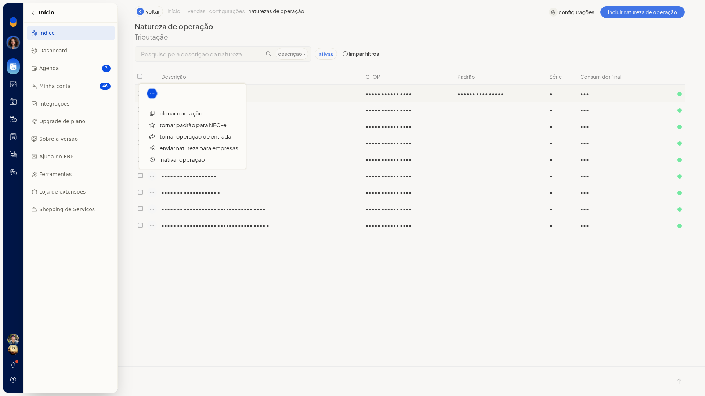

Clonar uma natureza de operação
Instruções
-
Acesse Configurações > Configurações ERP.
-
Abra a aba Notas Fiscais.
-
Clique em Naturezas de operação de saída (tributação).
-
Abra o menu de ações da linha da natureza que você quer clonar.

-
Clique em Clonar operação.